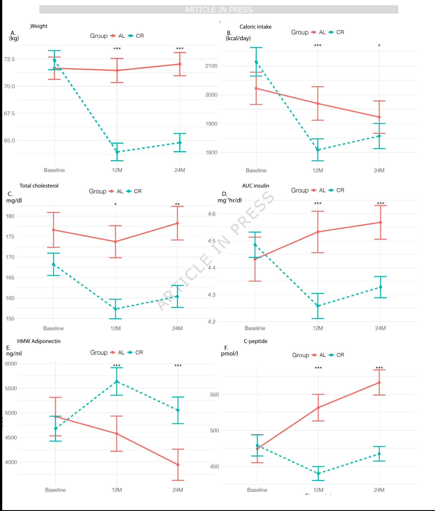
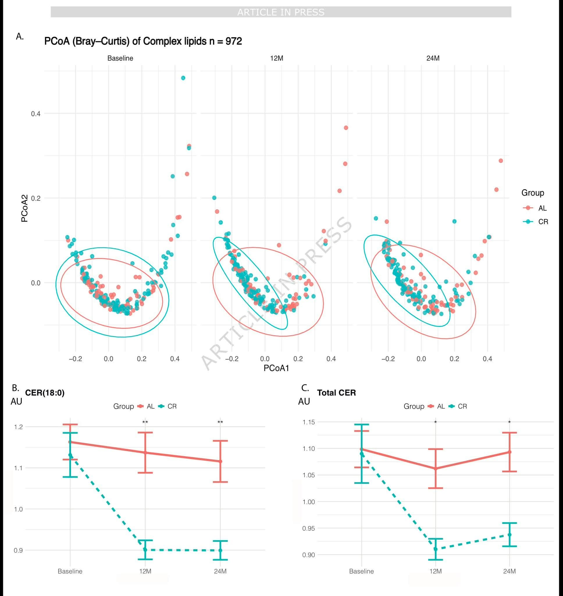
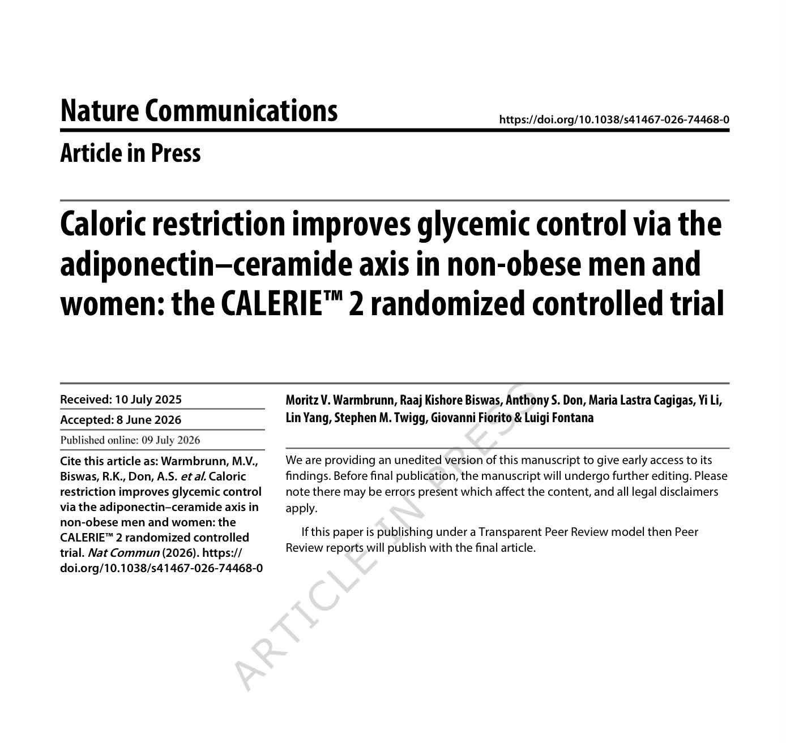

Excess insulin drives aging and disease.
Calorie restriction (and weight loss) dramatically lowers it.
Quoted:
“Chronically elevated insulin is not simply a marker of metabolic dysfunction. Insulin is a powerful nutrient-signaling hormone, and persistent activation of the insulin/IGF-1-AKT-mTOR network is linked to cellular growth, proliferation, aging biology and cancer-related pathways.
This is why preserving insulin sensitivity and preventing chronic hyperinsulinemia early in life may be so important for long-term health.”
#insulinHD #calorierestrictionHD #insulinresistanceHD #igf1HD #mtorHD #ceramidesHD #adiponectinHD
Caloric restriction is one of the most powerful physiological interventions we know for improving insulin sensitivity. But how does it actually work in humans?
This question matters far beyond diabetes.
Chronically elevated insulin is not simply a marker of metabolic dysfunction. Insulin is a powerful nutrient-signaling hormone, and persistent activation of the insulin/IGF-1–AKT–mTOR network is linked to cellular growth, proliferation, aging biology and cancer-related pathways.
This is why preserving insulin sensitivity and preventing chronic hyperinsulinemia early in life may be so important for long-term health.
In our new study in Nature Communications, we went deeper into the mechanisms.
Importantly, we studied young and middle-aged, non-obese, metabolically healthy men and women enrolled in the 2-year randomized CALERIE™ trial—not people with diabetes or advanced metabolic disease.
What we found is particularly interesting.
Caloric restriction produced a marked remodeling of lipid metabolism, with an increase in high-molecular-weight adiponectin and a reduction in several circulating ceramides, including species strongly implicated in insulin resistance.
Ceramides are not simply passive components of fat metabolism. They are bioactive lipid signals that can interfere with insulin signaling, impair Akt activation and glucose uptake, disrupt mitochondrial function and, in experimental models, contribute to β-cell dysfunction.
Our mediation analyses suggest that reductions in specific ceramides—including C18:0, C20:1 and C22:1—may partially explain the improvement in postprandial insulin responses induced by caloric restriction. Reductions in C18:0 were also associated with lower C-peptide secretion, consistent with reduced demand on pancreatic β-cells.
Even more interestingly, we identified a potential upstream mechanism.
Caloric restriction increased HMW adiponectin. Adiponectin signaling can promote ceramide breakdown, providing a biologically plausible link between adipose-tissue signaling, lipid metabolism and improved insulin action.
Our working model is:
Caloric restriction
→ ↑ adiponectin
→ ↓ ceramides
→ improved insulin sensitivity
→ lower insulin requirements and better glycemic control
The fact that we see this biology in people who are still non-obese and metabolically healthy may be especially important for prevention.
It suggests that metabolic deterioration may begin well before fasting glucose or HbA1c become abnormal, with earlier changes in insulin sensitivity, adipose-tissue signaling and bioactive lipid metabolism.
This raises what I believe is a crucial translational question:
Can we measure and monitor these metabolic signals over time, and use them to design more precise, personalized lifestyle interventions?
Instead of waiting for conventional markers to cross a diagnostic threshold, we may be able to identify earlier loss of metabolic resilience and determine which combination of diet, physical activity, sleep, body-composition change and other lifestyle interventions is most effective for a given individual.
The goal would be to move from generic recommendations toward mechanism-based, personalized prevention, guided by dynamic biomarkers of metabolic health.
Our study does not establish a definitive causal pathway—the mediation analyses remain hypothesis-generating and require further experimental validation. But it provides evidence from a long-term randomized human trial for a mechanistic bridge between nutrition, adiponectin signaling, ceramide metabolism and insulin sensitivity.
Ultimately, understanding and monitoring these pathways may help us intervene earlier—before metabolic dysfunction becomes overt disease.
🔗
Paper · Nat Commun · 2026Caloric restriction improves glycemic control via the adiponectin–ceramide axis in non-obese men and women: the CALERIE™ 2 randomized controlled trialdoi.org
#CaloricRestriction #InsulinSensitivity #Hyperinsulinemia #MetabolicHealth #PersonalizedPrevention #PrecisionHealth #Ceramides #Adiponectin #HealthyAging #Longevity #NutritionScience #CALERIE #NatureCommunications



